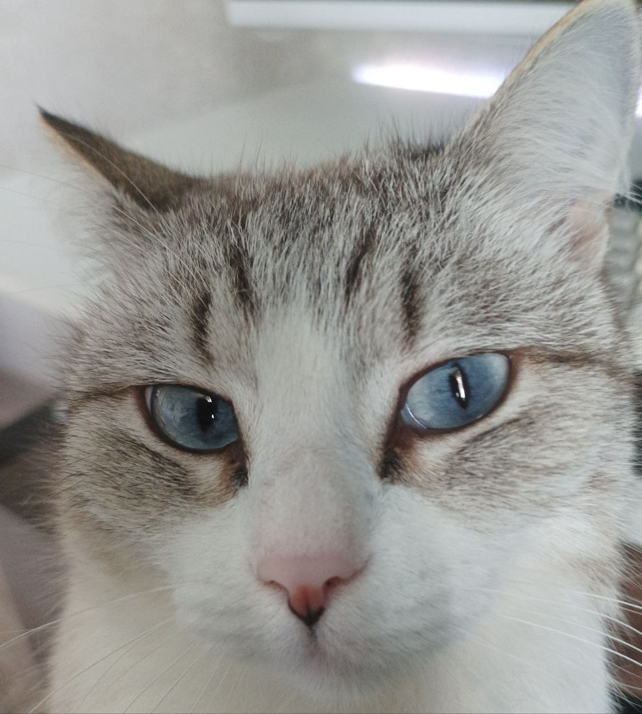

Проекты
- Кавер-версии
- Собственные композиции
- Ремиксы
- Саунд-дизайн
Навыки
- игра на инструменте
- знание DAW
- сведение треков
Позиционирование
static: блок стоит в потоке, где его поставили
relative-контейнер: квадрат прижат к его углу

static: блок стоит в потоке, где его поставили
relative-контейнер: квадрат прижат к его углу